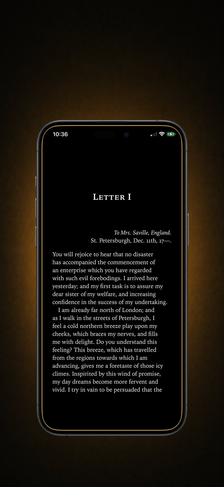

Focus is an economy, not a virtue
Every moment of work has an exchange rate: the effort of continuing versus the pleasure of escaping. When escape costs one thumb-tap and pays out instantly, the market crashes — no amount of "trying to focus harder" changes the math. People who seem naturally focused usually aren't stronger; their escape routes are just more expensive.
That's the entire game: raise the price of distraction until continuing your work is the cheaper option.
The attention residue problem
The damage of a "quick check" isn't the ninety seconds it takes. Research on task-switching shows that after an interruption, part of your mind stays with the feed — replaying, anticipating, itching. Getting fully back into deep work can take many minutes. Six quick checks an hour means you never actually arrive at your work at all; you spend the whole session in the shallow end, commuting between tabs.
The cost of a distraction isn't the minute it takes. It's the twenty minutes it poisons.
Raising the price: a practical setup
- Identify your escape apps. Not every app — the two or three your thumb visits on autopilot when work gets hard.
- Put a real toll on them. Not a timer you can wait out (waiting is free) — an act that demands engagement. Reading a few pages is ideal: it's incompatible with half-attention, so it fully interrupts the escape impulse.
- Make the toll strict during work hours. An escape hatch you can tap under pressure is an escape hatch you will tap under pressure. Deadline brain is astonishingly creative.
- Let the toll be the break. Here's the twist: sometimes you genuinely need a break. When your "distraction" opens a novel instead of a feed, the break actually restores you — reading lowers arousal; scrolling spikes it. You return to work calmer instead of twitchier.
Why a book beats a blank wall
Pure blockers turn every weak moment into a staring contest with a "blocked" screen — and staring contests drain the same self-control you need for your work. A book converts the weak moment into recovery. You didn't lose the round against distraction; you banked pages and came back settled. Over a workday, that difference compounds into hours.
How to build the setup with Block&Read
Block&Read makes distraction expensive and the alternative pleasant:
- Block your escape apps — the two your thumb knows by heart (Premium for more, plus schedules for work hours).
- Turn on Strict Mode so deadline brain can't negotiate its way to the feed.
- Reach for a distraction, get your book — the impulse gets interrupted, the break becomes restorative, and your daily goal inches forward with every weak moment.
- Check Stats at the end of the week: apps blocked and time won back, in numbers.
